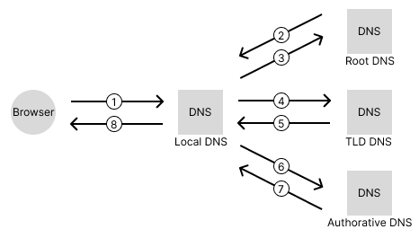

iconcert8's log
2023-03-16
1. 브라우저에서 URL을 분석
- URL이면 protocol 기반 요청
- URL이 아니면 검색엔진에 검색
2. 실제 서버의 IP 주소를 알아본다. DNS로 내가 접근 하려는 name의 IP 주소 요청
- Local DNS 서버의 cache를 먼저 확인. 있으면 사용.
- 없을 경우 DNS 시스템에 따라 Root - TLD(Top Level Domain) - Authorative 서버에 IP 주소를 얻어 온다.

3. IP주소를 받았으면 ARP를 통해서 내가 접근해야 할 MAC 주소를 추적
- ARP(Address Resolution Protocol), IP 주소로 MAC 주소를 가져오는 프로토콜
4. 대상과 TCP 연결 진행
- 3-way-handshake
- 🌏TCP 3-Way Handshake
5. HTTPS 라면 TLS 과정 추가
- CA 인증서를 통한 비밀키/공개키 사용, 이후 대칭키 통신
- 🔒TLS / SSL
6. HTTP GET 요청
- 서버는 해당 요청에 대한 Response
7. 브라우저는 Response를 받아 화면에 그린다.